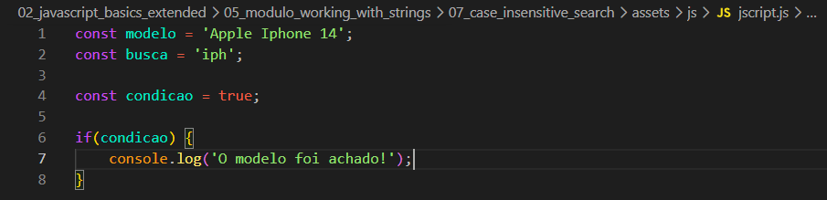
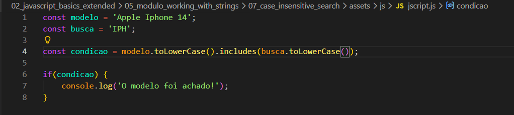

Case Insensitive Search
Intro
Aqui iremos ver como podemos fazer uma busca para que possamos encontrar alguma palavra ou parte dela, baseado na palavra que o usuario busca.
Aqui iremos ver como podemos fazer uma busca para que possamos encontrar alguma palavra ou parte dela, baseado na palavra que o usuario busca.
Aqui iremos usar como suposicao que temos uma loja de celulares e nele temos um modelo aple iphone 14, e ao usuario fazer uma busca com 'iph' é retornado oque ele busca, com isso fazemos uma condicao que ira determinar se a busca do usuario tem alguma conhecidencia ou nao e nessa condicional for verificada como true nos retornara que foi encontrado. Ficando da seguinte forma:

Um dos modos que podemos fazer isso é como o visto na aula anterior usando o includes. E passando mas alguns metodos de manipulacao para nao ter problemas em letras maiusculas ou minusculas. Ficando da seguinte forma:
